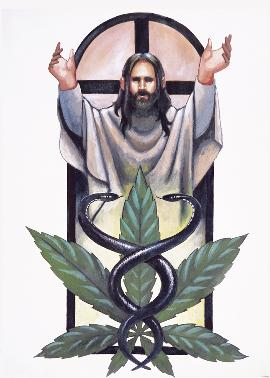

colorado : http://colorado.indymedia.org/newswire/display/15471/index.php

LOCAL News :: Civil & Human Rights : Crime & Police : Drugs
Clergy Pro-Pot Legalization
Across Nevada and the country, readers and viewers heard people like the Rev. Ruth Hanusa, chaplain at the Campus Christian Association at the University of Nevada-Reno, explain why they supported changing the marijuana laws. "Some of us Protestants believe that one of the functions of government is to curb sinful behavior," she said. "But our marijuana laws are not curbing marijuana use and they are causing more harm than good by filling the pockets of dangerous criminals and ensuring that children have the easiest access of anyone," she said.

Reefer & Religion: Nevada Clergy Embrace Marijuana Legalization
//////////////////////////////////////////////////
Drug War Chronicle
http://stopthedrugwar.org/chronicle/457/nevada_clergy_support_marijuana_
October 13, 2006
It was the press conference heard 'round the world -- or at least around the country and in every corner of Nevada. Last Tuesday, four Nevada clergymen stood side by side with organizers of the Nevada initiative to regulate and control marijuana to publicly endorse the measure. They spoke for at least 33 Nevada clergy who endorsed Question 7, as the initiative is known on the ballot.
The measure would allow adult Nevadans to legally possess small amounts of marijuana and to purchase it at state-regulated stores. Under current Nevada law, possession of less than an ounce is a misdemeanor offense and all sales are illegal.
Preachers for pot legalization -- for the media, that was as good as man bites dog, and the press coverage showed it. According to a list compiled by the Interfaith Drug Policy Initiative (IDPI), who spearheaded the effort of bringing the clergy on-board, media hits included CNN, MSNBC, every major newspaper in Nevada, repeated features on Nevada TV stations, and an Associated Press story that was picked up by at least 37 media outlets nationwide.
Across Nevada and the country, readers and viewers heard people like the Rev. Ruth Hanusa, chaplain at the Campus Christian Association at the University of Nevada-Reno, explain why they supported changing the marijuana laws. "Some of us Protestants believe that one of the functions of government is to curb sinful behavior," she said. "But our marijuana laws are not curbing marijuana use and they are causing more harm than good by filling the pockets of dangerous criminals and ensuring that children have the easiest access of anyone," she said.
They also got to hear the Rev. Paul Hansen, senior pastor at Holy Spirit Lutheran Church in Las Vegas explain why he supported Question 7. "On its face, our current marijuana laws appear to be moral, but it is a cosmetic morality," said Hansen. "Our current laws are causing virtually unfettered access to marijuana. Marijuana is far easier to access than alcohol because drug dealers don't card," he said.
"This became a big story because most people think that the religious community is the last place on earth to find support for ending marijuana prohibition," said IDPI's Troy Dayton, who has spent much of the year in Nevada. "It is making such a difference because by its very nature it reframes the debate. This marijuana issue is up against a lot of cultural baggage, decades of a government misinformation campaign, and a strong puritan ethic which embraces a spirit of punishment. In addition, many voters think they are voting on whether or not they think marijuana is good or not; not what the best policy regarding marijuana best serves the community."
Gaining the support of such respected community leaders is critical for gaining support for the cause, Dayton told Drug War Chronicle. "It doesn't matter if our side has better reasoning if the average voter dismisses the issue without a careful and open-minded inquiry," he said. "When the average voter hears about religious leader support, first his attention is grabbed, and secondly the cognitive dissonance of this reality forces a reframing of the issue in his mind. No one could accuse these religious leaders of being in favor of marijuana use and they are clearly respected moral leaders in the community. So this makes people wonder, 'Why are they supporting this?'"
The faith-based support is providing a boost for a campaign that is in a tight uphill battle to put Nevada over the top as the first state to vote to regulate and control marijuana, said initiative supporters. "To have so many people in the faith-based community who represent so many denominations is a big plus for the campaign," said Patrick Killen, communications director for the Committee to Regulate and Control Marijuana (CRCM), the group behind the campaign. "Having these people of faith come forward on this shows that creating a sensible alternatives to our state's marijuana laws is an issue that resonates with a diverse array of people in Nevada," he told the Chronicle.
"As far as we know, this is the first time that so many clergy from different denominations have explicitly called for legally regulated sources of access for marijuana," said IDPI executive director Charles Thomas. "And it came about because of a lot of hard work. We had Troy in Nevada for about five months, and our Tyler Smith joined him for a few weeks. They traveled the state and sat down and talked one-on-one with religious leaders, and a number of those people not only took the information and read it, but also took a few days to pray about it. Praying is a way to really reflect on what your deepest values are."
One of those doing some serious reflecting was Pastor Hansen. "Some people from the campaign contacted me this spring, and I was skeptical at first," said Hansen. "I thought it was about a bunch of people who smoked marijuana and wanted a license to do it, but as I began to research the issue, I saw there is a movement in the Western world to rethink our policies toward marijuana, and I thought this was a just position," he told the Chronicle. "When I look at the issue and what they're doing in Holland and all the unforeseen negative consequences of alcohol prohibition, I see a lot of the same things happening in terms of organized crime profiting from an underground criminal marijuana market."
Pastor Hansen made clear he was speaking for himself -- not representing his church or congregation -- as he addressed the issue. While his public stance in favor of Question 7 has won him support, "I've also gotten a few people who expressed their displeasure," he noted wryly. "Lutherans are not all of one mind on lots of issues."
Nor are members of other denominations. But having religious leaders speaking out for marijuana legalization is an advance for the cause. And with Question 7 trailing in some polls and leading narrowly in others, the divine intervention would be most welcome.
***
http://stopthedrugwar.org
http://www.cannabisculture.com/backissues/cc11/christ.html
//////////////////////////////////////////////////
Drug War Chronicle
http://stopthedrugwar.org/chronicle/457/nevada_clergy_support_marijuana_
October 13, 2006
It was the press conference heard 'round the world -- or at least around the country and in every corner of Nevada. Last Tuesday, four Nevada clergymen stood side by side with organizers of the Nevada initiative to regulate and control marijuana to publicly endorse the measure. They spoke for at least 33 Nevada clergy who endorsed Question 7, as the initiative is known on the ballot.
The measure would allow adult Nevadans to legally possess small amounts of marijuana and to purchase it at state-regulated stores. Under current Nevada law, possession of less than an ounce is a misdemeanor offense and all sales are illegal.
Preachers for pot legalization -- for the media, that was as good as man bites dog, and the press coverage showed it. According to a list compiled by the Interfaith Drug Policy Initiative (IDPI), who spearheaded the effort of bringing the clergy on-board, media hits included CNN, MSNBC, every major newspaper in Nevada, repeated features on Nevada TV stations, and an Associated Press story that was picked up by at least 37 media outlets nationwide.
Across Nevada and the country, readers and viewers heard people like the Rev. Ruth Hanusa, chaplain at the Campus Christian Association at the University of Nevada-Reno, explain why they supported changing the marijuana laws. "Some of us Protestants believe that one of the functions of government is to curb sinful behavior," she said. "But our marijuana laws are not curbing marijuana use and they are causing more harm than good by filling the pockets of dangerous criminals and ensuring that children have the easiest access of anyone," she said.
They also got to hear the Rev. Paul Hansen, senior pastor at Holy Spirit Lutheran Church in Las Vegas explain why he supported Question 7. "On its face, our current marijuana laws appear to be moral, but it is a cosmetic morality," said Hansen. "Our current laws are causing virtually unfettered access to marijuana. Marijuana is far easier to access than alcohol because drug dealers don't card," he said.
"This became a big story because most people think that the religious community is the last place on earth to find support for ending marijuana prohibition," said IDPI's Troy Dayton, who has spent much of the year in Nevada. "It is making such a difference because by its very nature it reframes the debate. This marijuana issue is up against a lot of cultural baggage, decades of a government misinformation campaign, and a strong puritan ethic which embraces a spirit of punishment. In addition, many voters think they are voting on whether or not they think marijuana is good or not; not what the best policy regarding marijuana best serves the community."
Gaining the support of such respected community leaders is critical for gaining support for the cause, Dayton told Drug War Chronicle. "It doesn't matter if our side has better reasoning if the average voter dismisses the issue without a careful and open-minded inquiry," he said. "When the average voter hears about religious leader support, first his attention is grabbed, and secondly the cognitive dissonance of this reality forces a reframing of the issue in his mind. No one could accuse these religious leaders of being in favor of marijuana use and they are clearly respected moral leaders in the community. So this makes people wonder, 'Why are they supporting this?'"
The faith-based support is providing a boost for a campaign that is in a tight uphill battle to put Nevada over the top as the first state to vote to regulate and control marijuana, said initiative supporters. "To have so many people in the faith-based community who represent so many denominations is a big plus for the campaign," said Patrick Killen, communications director for the Committee to Regulate and Control Marijuana (CRCM), the group behind the campaign. "Having these people of faith come forward on this shows that creating a sensible alternatives to our state's marijuana laws is an issue that resonates with a diverse array of people in Nevada," he told the Chronicle.
"As far as we know, this is the first time that so many clergy from different denominations have explicitly called for legally regulated sources of access for marijuana," said IDPI executive director Charles Thomas. "And it came about because of a lot of hard work. We had Troy in Nevada for about five months, and our Tyler Smith joined him for a few weeks. They traveled the state and sat down and talked one-on-one with religious leaders, and a number of those people not only took the information and read it, but also took a few days to pray about it. Praying is a way to really reflect on what your deepest values are."
One of those doing some serious reflecting was Pastor Hansen. "Some people from the campaign contacted me this spring, and I was skeptical at first," said Hansen. "I thought it was about a bunch of people who smoked marijuana and wanted a license to do it, but as I began to research the issue, I saw there is a movement in the Western world to rethink our policies toward marijuana, and I thought this was a just position," he told the Chronicle. "When I look at the issue and what they're doing in Holland and all the unforeseen negative consequences of alcohol prohibition, I see a lot of the same things happening in terms of organized crime profiting from an underground criminal marijuana market."
Pastor Hansen made clear he was speaking for himself -- not representing his church or congregation -- as he addressed the issue. While his public stance in favor of Question 7 has won him support, "I've also gotten a few people who expressed their displeasure," he noted wryly. "Lutherans are not all of one mind on lots of issues."
Nor are members of other denominations. But having religious leaders speaking out for marijuana legalization is an advance for the cause. And with Question 7 trailing in some polls and leading narrowly in others, the divine intervention would be most welcome.
***
http://stopthedrugwar.org
http://www.cannabisculture.com/backissues/cc11/christ.html
Account Login
Assignments
Polls
Information
Search
Quote-of-the-Moment
"(it has never} been suggested before that our inalienable rights are, in fact, alienable - on the unchecked whim of the president, no less."
-- Cord MacGuire, COIMC
Source:
http://colorado.indymedia.org/newswire/display/12419
This site made manifest by dadaIMC software
Page executed in 0.235584020615 seconds.
Loaded 50/60 class files. Read 23 objects from the database. Queried the database 11 times. Served 4 files from the cache.